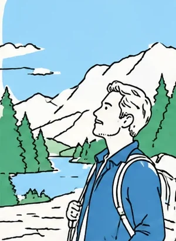

秋田県の印章店「タカハシ印店」（創業65年）は、主力のオーダー製ゴム印に加えて、レーザー彫刻機で金属部品への刻印などの新サービスを始めました。商工会と市場調査を行い、新しい取引先を開拓しています。
- 使った制度
- 小規模事業者持続化補助金
- 業種
- 印章・印刷・加工サービス
- 地域
- 秋田県（由利本荘市）
- 事業者
- タカハシ印店

※イラストはイメージです
取り組む前の課題
創業65年のはんこ店です。県内企業へのオーダー製ゴム印の納品が最も多く、売上の8割を占めていました。一方で、印鑑の需要が低下しているため、新しいサービスを作ることが課題でした。
補助金を使った取り組み
- 平成30年度第2次補正予算の持続化補助金（一般型）を使い、レーザー彫刻機を導入しました。「金属マーキング加工」や「オリジナル文字の刻印」などの新サービスを始めました。
- 新サービスを紹介するパンフレットを作り、機械部品の製造業を中心に160社に営業活動を行いました。
取り組みの成果
- 複数社から見積もりの依頼を受け、売上目標も達成できる見込みになりました。
- 現在では、新サービスが売上の15％を占めるまで成長したと紹介されています。
この事例から学べること
- 商工会と共に市場調査を行い、金属部品へのマーキングという需要を見つけてから、補助金で作ったパンフレットを使いました。
- 「はんこ店」というイメージが強い地域で、金属マーキングなどの新しいサービスを知ってもらうことが、事業の広がりにつながっています。
使った制度の全体像は小規模事業者持続化補助金とは？で解説しています。今の制度の名前や金額は、事例の当時と変わっていることがあります。申請の前に、必ず最新の公募要領で確認してください。
出典
このページは、次の公開情報を加工して作成しました（公共データ利用規約（第1.0版）に基づく利用）。要約・再構成は当サイトによるもので、国や出典の発行元が作成したものではありません。数字や内容は出典の記載にもとづく当時の情報です。くわしくは出典をご覧ください。
- 東北経済産業局「小規模事業者持続化補助金 活用事例集」（令和元年度〜令和2年度実施分）（東北経済産業局（経済産業省））
最終更新日：2026年10月10日